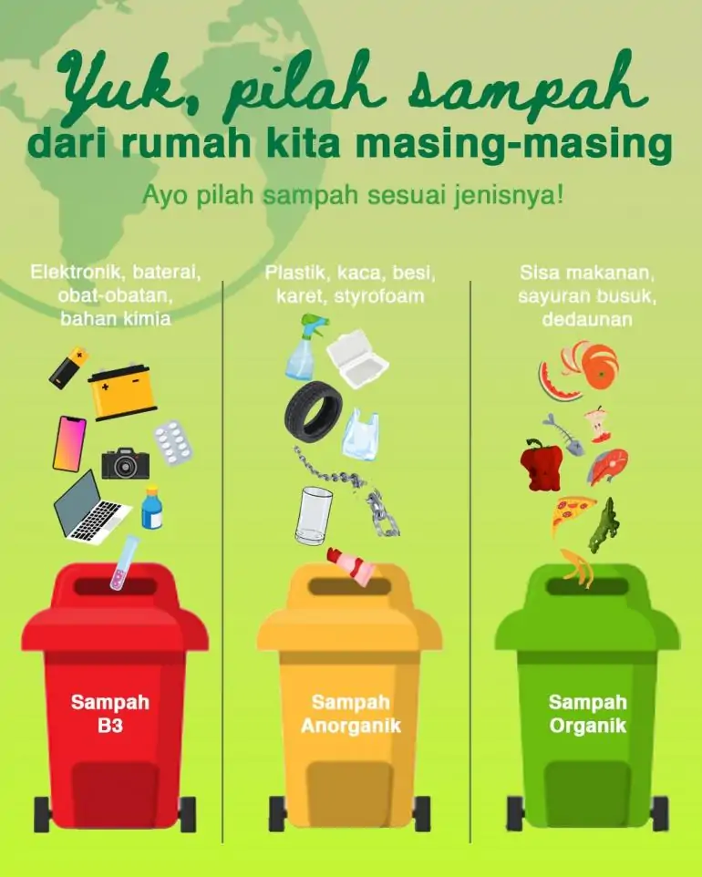
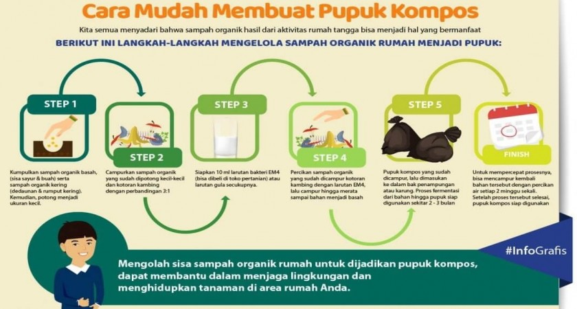

Yuk mulai peduli lingkungan dari hal-hal kecil.
Sering bingung mau buang sampah ke mana? Tenang, yang penting mulai dulu aja dengan memilah. Sisanya, gambar ini bisa bantu banget kok.
Kelihatannya simpel, tapi membakar sampah plastik itu efeknya bahaya banget. Coba deh lihat gambarnya. Masih yakin mau dibakar?

Ternyata bikin kompos itu nggak ribet, lho. Lihat langkah-langkahnya, bisa langsung dicoba di rumah. Yuk mulai dari dapur sendiri.
